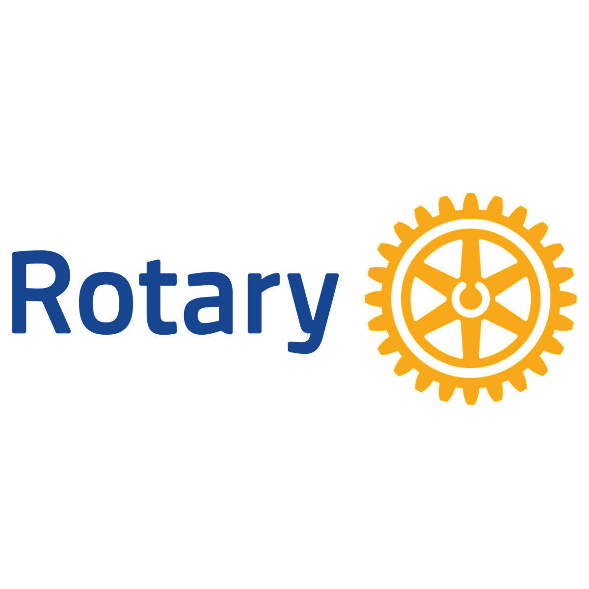
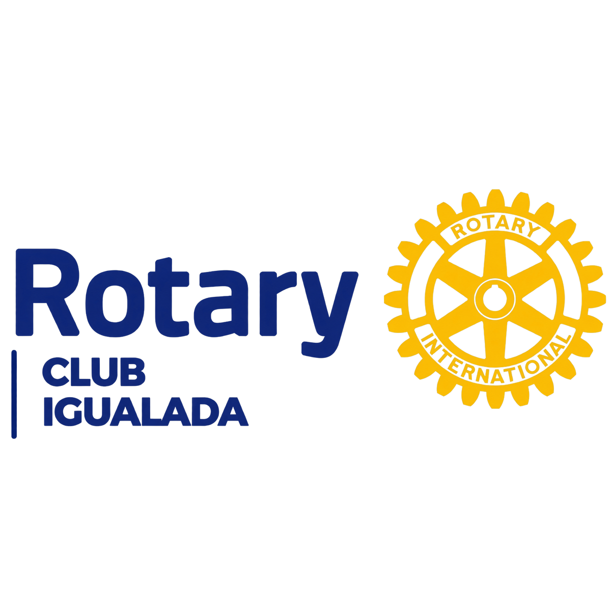
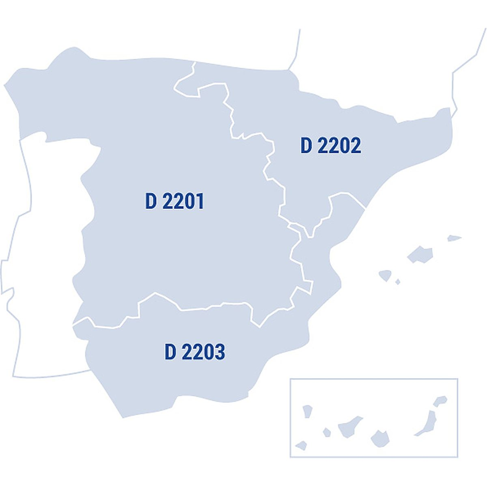
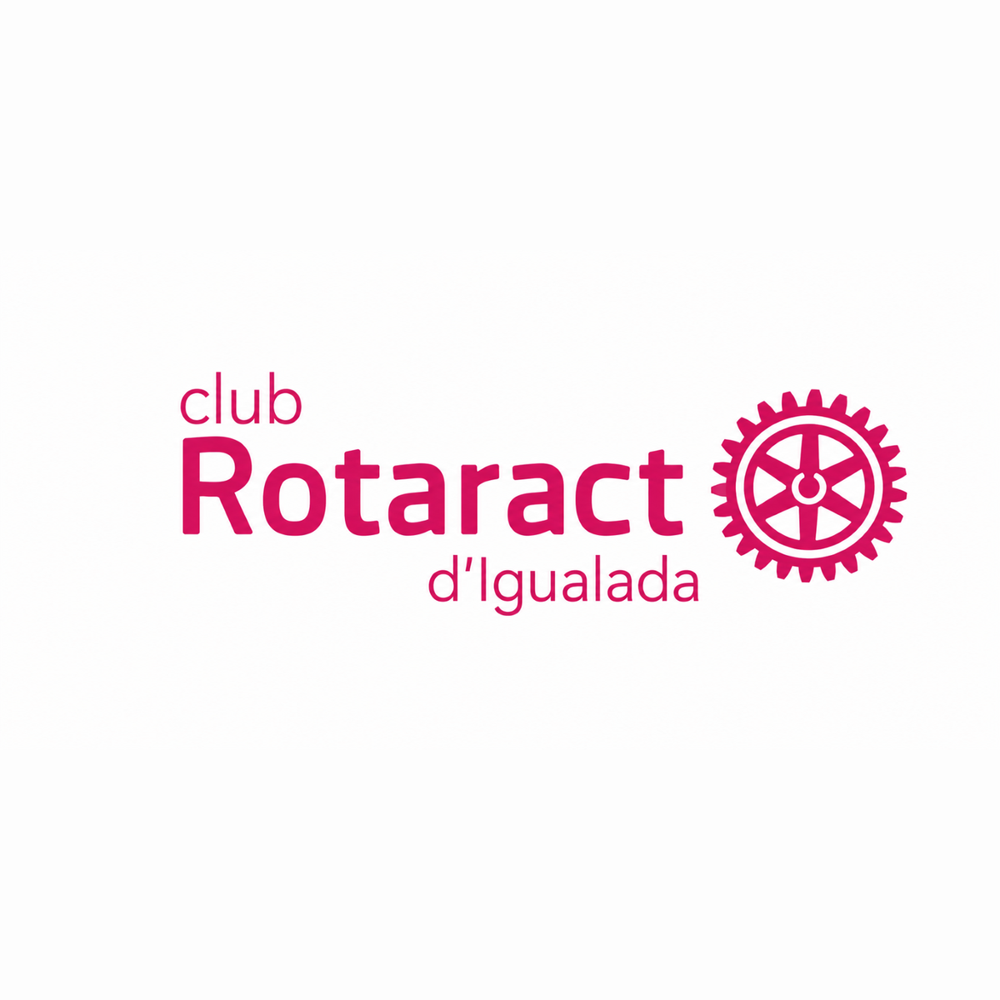

Quiénes somos
Nosotros
Conoce Rotaract Igualada, nuestra familia Rotary y el movimiento internacional del que formamos parte.
Rotary International
Rotary International es una organización mundial de líderes cívicos y empresariales dedicados a prestar ayuda humanitaria, promover la paz y mejorar el entendimiento internacional. Fundada en 1905, reúne a más de 1,4 millones de socios en 46.000 clubes de todo el mundo.
Sus pilares de acción incluyen promover la paz, luchar contra las enfermedades, el acceso al agua potable, la salud materno-infantil, apoyar la educación y hacer crecer las economías locales.
Visitar rotary.org →
Rotary Internacional
Rotary Igualada
El Rotary Club Igualada es el club padrino de nuestro club Rotaract. Formado por profesionales y empresarios de la comarca de la Anoia, lleva décadas trabajando en proyectos locales e internacionales para mejorar la vida de las personas.
Su trabajo inspira y apoya nuestra actividad como Rotaract, compartiendo los valores de servicio, amistad e integridad.
Visitar rotaryigualada.org →
Rotary Igualada
Rotaract Internacional
i Districte
Rotaract es una red internacional de jóvenes que quieren generar un impacto positivo en su entorno, desarrollar habilidades de liderazgo y formar parte de una comunidad activa y comprometida. Impulsada por Rotary International, cuenta con más de 10.000 clubes en más de 170 países.
Nuestro club pertenece al Distrito 2202, que agrupa los clubes Rotary y Rotaract de Cantabria, Navarra, Euskadi (País Vasco), La Rioja, Aragón y Cataluña. En el distrito, los clubes Rotaract conectan a jóvenes de distintas ciudades para impulsar proyectos de servicio, voluntariado, formación, amistad y cooperación con Rotary.
Contacto del Distrito 2202

Rotaract Internacional
Rotaract Igualada
Rotaract Club Igualada nace de la voluntad de un grupo de jóvenes de la comarca de la Anoia de poner su talento y energía al servicio de la comunidad. Somos miembros activos de la red global Rotaract y trabajamos para crear un impacto real en nuestra comunidad.
Impulsamos proyectos de servicio, voluntariado, formación y amistad en cooperación con Rotary Igualada, con quien compartimos los valores de servicio, amistad e integridad.
Ven a descubrir quiénes somos, qué hacemos y cómo puedes participar. No necesitas experiencia previa: solo ganas de aportar, aprender y conocer gente con las mismas inquietudes que tú.
Inscríbete al club (Formulario de alta) →
Rotaract Igualada